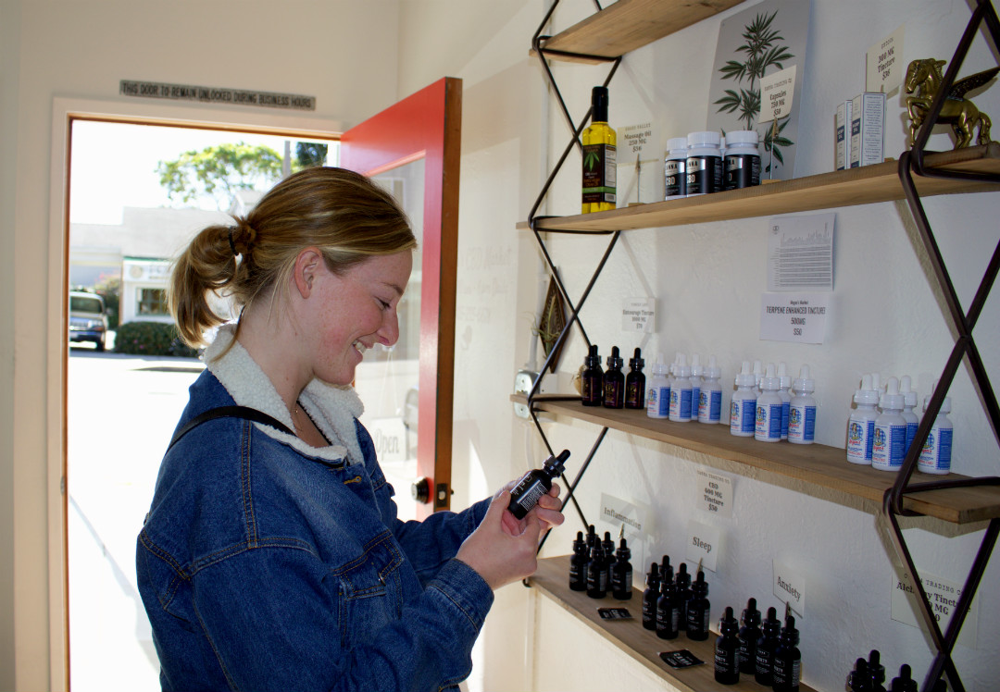
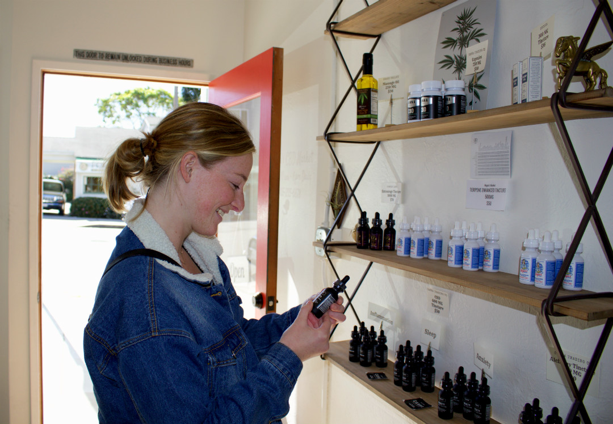
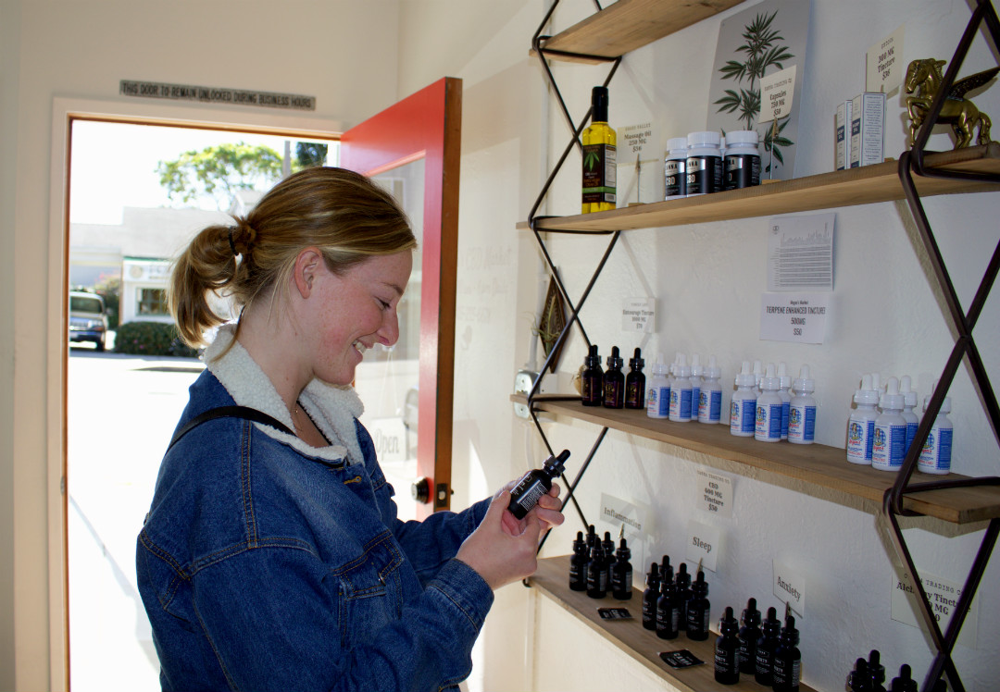

The use of CBD can help alleviate some of the anxiety symptoms that many college students deal with.
A Student Perspective
Follow along as 3rd year Macie Miller searches for a new CBD product to help allevite some anxiety symptoms.


 



The use of CBD can help alleviate some of the anxiety symptoms that many college students deal with.
Follow along as 3rd year Macie Miller searches for a new CBD product to help allevite some anxiety symptoms.

Click on images to hear ...
(Double-click to pause audio)
 />
/>
/>
/>
An interview with the owner and operator of Megans CBD Market's.